К устройствам отображения информации относятся прежде всего мониторы, а также устройства, ориентированные на решение мультимедийных или презентационных задач: устройства формирования объемных (стереоскопических) изображений и проекторы.
Монитор является важнейшим устройством отображения компьютерной информации. Типы современных мониторов отличаются большим разнообразием. По принципу действия все мониторы для ПК можно разделить на две большие группы:
Мониторы на основе ЭЛТ — наиболее распространенные устройства отображения информации. Используемая в этом типе мониторов технология была разработана много лет назад и первоначально создавалась в качестве специального инструментария для измерения переменного тока, т.е. для осциллографа.
Конструкция ЭЛТ-монитора представляет собой стеклянную трубку, внутри которой находится вакуум. С фронтальной стороны внутренняя часть стекла трубки покрыта люминофором. В качестве люминофоров для цветных ЭЛТ используются довольно сложные составы на основе редкоземельных металлов — иттрия, эрбия и др. Люминофор — это вещество, которое испускает свет при бомбардировке его заряженными частицами. Для создания изображения в ЭЛТ-мониторе используется электронная пушка, которая испускает поток электронов сквозь металлическую маску или решетку на внутреннюю поверхность стеклянного экрана монитора, которая покрыта разноцветными люминофорными точками. Электроны попадают на люминофорный слой, после чего энергия электронов преобразуется в свет, т. е. поток электронов заставляет точки люминофора светиться. Эти светящиеся точки люминофора формируют изображение на мониторе. Как правило, в цветном ЭЛТ-мониторе используются три электронные пушки, в отличие от одной пушки, применяемой в монохромных мониторах. 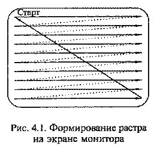
На пути пучка электронов обычно находятся дополнительные электроды: модулятор, регулирующий интенсивность пучка электронов и связанную с ней яркость изображения; фокусирующий электрод, определяющий размер светового пятна; размещенные на основании ЭЛТ катушки отклоняющей системы, которые изменяют направление пучка. Любое текстовое или графическое изображение на экране монитора состоит из множества дискретных точек люминофора, называемых пикселами и представляющих собой минимальный элемент изображения-растра.
Формирование растра в мониторе производится с помощью специальных сигналов, поступающих на отклоняющую систему. Под действием этих сигналов производится сканирование луча по поверхности экрана по зигзагообразной траектории от левого верхнего угла до правого нижнего, как показано на рис. 4.1. Ход луча по горизонтали осуществляется сигналом строчной (горизонтальной) развертки, а по вертикали — кадровой (вертикальной) развертки. Перевод луча из крайней правой точки строки в крайнюю левую точку следующей строки (обратный ход луча по горизонтали) и из крайней правой позиции последней строки экрана в крайнюю левую позицию первой строки (обратный ход луча по вертикали) производится посредством специальных сигналов обратного хода. Мониторы такого типа называются растровыми. Электронный луч в этом случае периодически сканирует экран, образуя на нем близко расположенные строки развертки. По мере движения луча по строкам видеосигнал, подаваемый на модулятор, изменяет яркость светового пятна и образует видимое на экране изображение. Разрешающая способность монитора определяется числом элементов изображения, которые он способен воспроизводить по горизонтали и вертикали, например, 640х480 или 1024x768 пикселов.
В отличие от телевизора, где видеосигнал, управляющий яркостью электронного пучка, является аналоговым, в мониторах ПК используются как аналоговые, так и цифровые видеосигналы. В связи с этим мониторы для ПК принято разделять на аналоговые и цифровые. Первыми устройствами отображения информации ПК были цифровые мониторы.
В цифровых мониторах управление осуществляется двоичными сигналами, которые имеют только два значения: логическая 1 и логический 0 («да» и «нет»). Уровню логической единицы соответствует напряжение около 5 В, уровню логического нуля - не более 0,5 В. Поскольку те же уровни «1» и «О» используются в широко распространенной стандартной серии микросхем на основе транзисторно-транзисторной логики (TTL - Transistor Transistor Logic - транзисторно-транзисторная логика), цифровые мониторы называют TTL-мониторами.
Первые TTL-мониторы были монохромными, впоследствии появились цветные. В монохромных цифровых мониторах точки на экране могут быть только светлыми или темными, различаясь яркостью. Электронно-лучевая трубка монохромного монитора имеет только одну электронную пушку; она меньше цветных ЭЛТ, бдагодаря чему монохромные мониторы компактнее и легче других. Кроме того, монохромный монитор работает с более низким анодным напряжением, чем цветной (15 кВ против 21-25 кВ), поэтому потребляемая им мощность значительно ниже (30 Вт вместо 80-90 Вт у цветных).
В кинескопе цветного цифрового монитора содержатся три электронные пушки: для красного (Red), зеленого (Green) и синего (Blue) цветов с раздельным управлением, поэтому его называют RGB-монитором.
Цифровые RGB-мониторы поддерживают и монохромный режим работы с отображением до 16 градаций серого цвета.
Аналоговые мониторы, так же как и цифровые, бывают цветными и монохромными, при этом цветной монитор может работать в монохромном режиме.
Главная причина перехода к аналоговому видеосигналу состоит в ограниченности палитры цветов цифрового монитора, диалоговый видеосигнал, регулирующий интенсивность пучка электронов, может принимать любое значение в диапазоне от 0 до 0,1 В. Поскольку этих значений бесконечно много, палитра аналогового монитора не ограничена. Однако видеоадаптер может обеспечить только конечное количество градаций уровня видеосигнала, что в итоге ограничивает палитру всей видеосистемы в целом.
Для понимания принципа формирования растра цветных мониторов следует представлять механизм цветового зрения. Свет — это электромагнитные колебания в определенном диапазоне длин волн. Человеческий глаз способен различать цвета, соответствующие различным областям спектра видимого излучения, который зажимает лишь незначительную часть общего спектра электромагнитных колебаний в диапазоне длин волн от 0,4 до 0,75 мкм.
Совокупное излучение длин волн всего видимого диапазона воспринимается глазом как белый свет. Глаз человека имеет рецепторы трех типов, ответственные за восприятие цвета и различающиеся своей чувствительностью к электромагнитным колебаниям различных длин волн. Одни из них реагируют на фиолетово-синий, другие - на зеленый, третьи - на оранжево-красный цвет. Если на рецепторы свет не попадает, глаз человека воспринимает черный цвет. Если все рецепторы освещаются одинаково, человек видит серый или белый цвет. При освещении объекта часть света отражается от него, а часть поглощается. Плотность цвета определяется количеством поглощенного объектом света в данном спектральном диапазоне. Чем плотнее цветовой слой, тем меньше света отражается и, как следствие, более темным получается оттенок цвета (тон).
Физиологические особенности цветового зрения исследовались М. В.Ломоносовым. В основу разработанной им теории цветового зрения положен экспериментально установленный факт, что все цвета могут быть получены путем сложения трех световых потоков с высокой насыщенностью, например, красного, зеленого и синего, называемых основными или первичными.
Обычно световое излучение возбуждает все рецепторы человеческого глаза одновременно. Зрительный аппарат человека анализирует свет, определяя в нем относительное содержание различных излучений, а затем в мозгу происходит их синтез в единый цвет.
Благодаря замечательному свойству глаза - трехкомпонентности цветного восприятия - человек может различать любой из цветовых оттенков: достаточно информации только о количественном соотношении интенсивностей трех основных цветов, поэтому нет необходимости в непосредственной передаче всех цветов. Таким образом, благодаря физиологическим особенностям цветового зрения, значительно сокращается объем информации о цвете и упрощаются многие технологические решения, связанные с регистрацией и обработкой цветных изображений.
Еще одним важным свойством цветового зрения является пространственное усреднение цвета, которое заключается в том, что если на цветном изображении имеются близко расположенные цветные детали, то с большого расстояния цвета отдельных деталей неразличимы. Все близко расположенные цветные детали будут выглядеть окрашенными в один цвет. Благодаря этому свойству зрения в электронно-лучевой трубке монитора формируется цвет одного элемента изображения из трех цветов расположенных рядом люминофорных зерен. 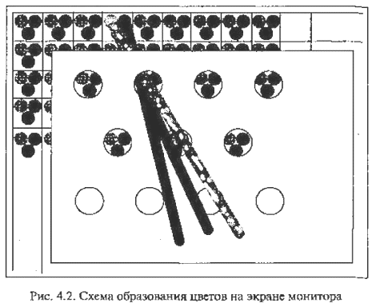
Указанные свойства цветового зрения использованы при разработке принципа действия ЭЛТ цветного монитора. В электронно-лучевой трубке цветного монитора расположены три электронные пушки с независимыми схемами управления, а на внутреннюю поверхность экрана нанесен люминофор трех основных цветов: красного, синего и зеленого.
На рис. 4.2 представлена схема образования цветов на экране монитора. Электронный луч каждой пушки возбуждает точки люминофора, и они начинают светиться. Точки светятся по-разному и представляют собой мозаичное изображение с чрезвычайно малыми размерами каждого элемента. Интенсивность свечения каждой точки зависит от управляющего сигнала электронной пушки. В человеческом глазу точки с тремя основными цветами пересекаются и накладываются друг на друга. Изменением соотношения интенсивностей точек трех основных цветов получают требуемый оттенок на экране монитора. Для того чтобы каждая пушка направляла поток электронов только на пятна люминофора соответствующего цвета, в каждом цветном кинескопе имеется специальная цветоделительная маска.
В зависимости от расположения электронных пушек и конструкции цветоделительной маски (рис. 4.3) различают ЭЛТ четырех типов, используемые в современных мониторах: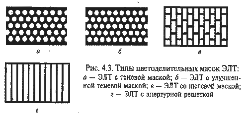
ЭЛТ с теневой маской (Shadow Mask) (см. рис. 4.3-а) наиболее распространены в большинстве мониторов, производимых LG, Samsung, Viewsonic, Hitachi, Belinea, Panasonic, Daewoo, Nokia;
ЭЛТ с улучшенной теневой маской (EDP - Enhenced Dot Pitch) (см. рис. 4.3-б);
ЭЛТ со щелевой маской (Slot Mask) (см. рис. 4.3-в), в которой люминофорные элементы расположены в вертикальных ячейках, а маска сделана из вертикальных линий. Вертикальные полосы разделены на ячейки, содержащие группы из трех люминофорных элементов трех основных цветов. Этот тип маски применяется фирмами Nec и Panasonic;
ЭЛТ с апертурной решеткой из вертикальных линий (Aperture Grill) (см. рис. 4.3-г). Вместо точек с люминофорными элементами трех основных цветов апертурная решетка содержит серию нитей, состоящих из люминофорных элементов, выстроенных в виде вертикальных полос трех основных цветов. По этой технологии производятся трубки Sony и Mitsubishi.
Конструктивно теневая маска представляет собой металлическую пластину из специального материала, инвара, с системой отверстий, соответствующих точкам люминофора, нанесенным на внутреннюю поверхность кинескопа. Температурная стабилизация формы теневой маски при ее бомбардировке электронным пучком обеспечивается малым значением коэффициента линейного расширения инвара. Апертурная решетка образована системой щелей, выполняющих ту же функцию, что и отверстия в теневой маске.
Оба типа трубок (с теневой маской и апертурной решеткой) имеют свои преимущества и области применения. Трубки с теневой маской дают более точное и детализированное изображение, поскольку свет проходит через отверстия в маске с четкими краями. Поэтому мониторы с такими ЭЛТ рекомендуется использовать при интенсивной и длительной работе с текстами и мелкими элементами графики. Трубки с апертурной решеткой имеют более ажурную маску, они меньше заслоняют экран и позволяют получить более яркое, контрастное изображение в насыщенных цветах. Мониторы с такими трубками хорошо подходят для настольных издательских систем и других приложений, ориентированных на работу с цветными изображениями.
Минимальное расстояние между люминофорными элементами одинакового цвета в теневых масках называется Dot Pitch (шаг точки) и является индексом качества изображения. Шаг точки обычно измеряется в миллиметрах. Чем меньше значение шага точки, тем выше качество воспроизводимого на мониторе изображения. Среднее расстояние между точками люминофора называется зерном. У различных моделей мониторов данный параметр имеет значение от 0,2 до 0,28 мм. В ЭЛТ с апертурной решеткой среднее расстояние между полосами называется Strip Pitch (шаг полосы) и измеряется в миллиметрах. Чем меньше величина шага полосы, тем выше качество изображения на мониторе. Нельзя сравнивать размер шага для трубок разных типов: шаг точек (или триад) трубки с теневой маской измеряется по диагонали, в то время как шаг апертурной решетки, иначе называемый горизонтальным шагом точек, - по горизонтали. Поэтому при одинаковом шаге точек трубка с теневой маской имеет большую плотность точек, чем трубка с апертурной решеткой. Для примера: 0,25 мм шага точки приблизительно эквивалентно 0,27 мм шага полосы.
Помимо электронно-лучевой трубки монитор содержит управляющую электронику, которая обрабатывает сигнал, поступающий напрямую от видеокарты ПК. Эта электроника должна оптимизировать усиление сигнала и управлять работой электронных пушек.
Выведенное на экран монитора изображение выглядит стабильным, хотя на самом деле таковым не является. Изображение на экране воспроизводится в результате процесса, в ходе которого свечение люминофорных элементов инициируется электронным лучом, проходящим последовательно по строкам. Этот процесс происходит с высокой скоростью, поэтому кажется, что экран светится постоянно. В сетчатке глаза изображение хранится около 1/20 сек. Это означает, что если электронный луч будет двигаться по экрану медленно, глаз воспримет это как отдельную движущуюся яркую точку, но когда луч начинает двигаться с высокой скоростью, прочерчивая на экране строку 20 раз в секунду, глаз увидит равномерную линию на экране. Если обеспечить последовательное сканирование лучом экрана по горизонтальным линиям сверху вниз за время меньшее 1/25 сек., глаз воспримет равномерно освещенный экран с небольшим мерцанием. Движение самого луча происходит настолько быстро, что глаз не в состоянии его заметить. Считается, что мерцание становится практически незаметным при частоте повторения кадров (проходов луча по всем элементам изображения) примерно 75 раз в секунду.
Высвеченные пикселы экрана должны продолжать светиться в течение времени, которое необходимо электронному лучу, чтобы просканировать весь экран и вернуться снова для активизации данного пиксела при прорисовке уже следующего кадра. Следовательно, минимальное время послесвечения должно быть не меньше периода смены кадров изображения, т.е. 20 мс.
Диагональ экрана монитора - расстояние между левым нижним и правым верхним углом экрана, измеряемое в дюймах. Размер видимой пользователю области экрана обычно несколько меньше, в среднем на 1", чем размер трубки. Производители могут указывать в сопровождающей документации два размера диагонали, при этом видимый размер обычно обозначается в скобках или с пометкой «Viewable size», но иногда указывается только один размер - размер диагонали трубки. В качестве стандарта для ПК выделились-мониторы с диагональю 15", что примерно соответствует 36-39 см диагонали видимой области. Для работы в Windows желательно иметь монитор размером, по крайней мере, 17". Для профессиональной работы с настольными издательскими системами (НИС) и системами автоматизированного проектирования (САПР) лучше использовать монитор размером 20" или 21".
Размер зерна экрана определяет расстояние между ближайшими отверстиями в цветоделительной маске используемого типа. Расстояние между отверстиями маски измеряется в миллиметрах. Чем меньше расстояние между отверстиями в теневой маске и чем больше этих отверстий, тем выше качество изображения. Все мониторы с зерном более 0,28 мм относятся к категории грубых и стоят дешевле. Лучшие мониторы имеют зерно 0,24 мм, достигая 0,2 мм у самых дорогостоящих моделей.
Разрешающая способность монитора определяется количеством элементов изображения, которые он способен воспроизводить по горизонтали и вертикали. Мониторы с диагональю экрана 19" поддерживают разрешение до 1920х1440 и выше.
Тип электронно-лучевой трубки следует принимать во внимание при выборе монитора. Наиболее предпочтительны такие типы кинескопов, как Black Trinitron, Black Matrix или Black Planar. Мониторы этих типов имеют особое люминофорное покрытие.
Потребляемая мощность монитора указывается в его технических характеристиках. У мониторов 14" потребляемая мощность не должна превышать 60 Вт.
Покрытия экрана необходимы для придания ему антибликовых и антистатических свойств. Антибликовое покрытие позволяет наблюдать на экране монитора только изображение, формируемое компьютером, и не утомлять глаза наблюдением отраженных объектов. Существует несколько способов получения антибликовой (не отражающей) поверхности. Самый дешевый из них — протравливание. Оно придает поверхности шероховатость. Однако графика на таком экране выглядит не резко, качество изображения низкое. Наиболее популярен способ нанесения кварцевого покрытия, рассеивающего падающий свет; этот способ реализован фирмами Hitachi и Samsung. Антистатическое покрытие необходимо для предотвращения прилипания к экрану пыли вследствие накопления статического электричества.0
Защитный экран (фильтр) должен быть непременным атрибутом ЭЛТ-монитора, поскольку медицинские исследования показали, что излучение, содержащее лучи в широком диапазоне (рентгеновское, инфракрасное и радиоизлучение), а также электростатические поля, сопровождающие работу монитора, могут весьма отрицательно сказываться на здоровье человека.
По технологии изготовления защитные фильтры бывают: сеточные, пленочные и стеклянные. Фильтры могут крепиться к передней стенке монитора, навешиваться на верхний край, вставляться в специальный желобок вокруг экрана или надеваться на монитор.
Сеточные фильтры практически не защищают от электромагнитного излучения и статического электричества и несколько ухудшают контрастность изображения. Однако эти фильтры неплохо ослабляют блики от внешнего освещения, что немаловажно при длительной работе с компьютером.
Пленочные фильтры также не защищают от статического электричества, но значительно повышают контрастность изображения, практически полностью поглощают ультрафиолетовое излучение и снижают уровень рентгеновского излучения. Поляризационные пленочные фильтры, например фирмы Polaroid, способны поворачивать плоскость поляризации отраженного света и подавлять возникновение бликов.
Стеклянные фильтры производятся в нескольких модификациях. Простые стеклянные фильтры снимают статический заряд, ослабляют низкочастотные электромагнитные поля, снижают интенсивность ультрафиолетового излучения и повышают контрастность изображения. Стеклянные фильтры категории «полная защита» обладают наибольшей совокупностью защитных свойств: практически не дают бликов, повышают контрастность изображения в полтора-два раза, устраняют электростатическое поле и ультрафиолетовое излучение, значительно снижают низкочастотное магнитное (менее 1000 Гц) и рентгеновское излучение. Эти фильтры изготавливаются из специального стекла.
Безопасность монитора для человека регламентируется стандартами ТСО: ТСО-92, ТСО-95, ТСО-99, предложенными Шведской конфедерацией профсоюзов. ТСО-92, выпущенный в 1992 г., определяет параметры электромагнитного излучения, дает определенную гарантию противопожарной безопасности, обеспечивает электрическую безопасность и определяет параметры энергосбережения. В 1995 г. стандарт существенно расширили (ТСО-95), включив в него требования к эргономике мониторов. В ТСО-99 требования к мониторам еще более ужесточили. В частности, стали жестче требования к излучениям, эргономике, энергосбережению, пожаробезопасности. Присутствуют здесь и экологические требования, которые ограничивают наличие в деталях монитора различных опасных веществ и элементов, например тяжелых металлов.
Срок службы монитора в значительной мере зависит от температуры его нагрева при работе. Если монитор очень сильно нагревается, можно ожидать, что срок его службы будет невелик. Монитор, корпус которого имеет большое число вентиляционных отверстий, соответственно хорошо охлаждается. Хорошее охлаждение препятствует быстрому выходу его из строя.
Для просмотра фильма "Как это сделано: Катодно-лучевые трубки (Discovery Chanel)" нажмите кнопку ВОСПРОИЗВЕДЕНИЕ.
Мультимедийным считается монитор со встроенной акустической системой и обеспечением реалистичности изображения на его экране, который перекрывает поле зрения оператора. Перекрытие поля зрения пользователя необходимо, чтобы исключить влияние многочисленных отвлекающих факторов окружающей обстановки, что особенно важно для пользователя при работе с игровыми приложениями. Реально эту задачу решает монитор с диагональю экрана не менее 17". Как правило, такие мониторы отличаются зерном небольшого размера (не более 0,27 — 0,28 мм) и имеют частоту строк не менее 70 кГц, что обеспечивает четкое изображение, лишенное мерцаний. Кроме того, на передней панели такого монитора должны находиться регулятор громкости и гнезда для подключения стереофонических головных телефонов (наушников) и внешнего микрофона.
В мультимедийных мониторах акустические колонки устанавливаются внутри его корпуса и располагаются либо по бокам от экрана, либо под экраном. При наличии встроенной акустической системы накладываются специфические требования на форму и конструкцию корпуса монитора, поскольку он должен иметь не только хороший дизайн, но и обеспечивать необходимые резонансные свойства для получения качественного звука. Типичная акустическая мощность каждого из громкоговорителей в мультимедийном мониторе от 1,5 до 5 Вт. Акустическое оборудование мультимедийного монитора не соответствует уровню специализированных акустических систем класса HI-Fi и по-настоящему хороший звук обеспечить не в состоянии. Поэтому мультимедийный монитор удобен и полезен для типовых мультимедийных приложений: игр, видеоконференций, где не требуется звук высокого качества.
Технология Plag & Plag обеспечивает автоматическое конфигурирование подключаемого оборудования. Практически все современные мониторы поддерживают эту технологию. Технология «Plag & Plag» для Windows 95, 98 позволяет графической плате получать необходимые данные непосредственно с монитора по нескольким незанятым проводам VGA-кабеля.
Мониторы на основе ЭЛТ в настоящее время являются наиболее распространенными, однако они обладают рядом недостатков: значительные масса, габариты и энергопотребление; наличие тепловыделения и излучения, вредного для здоровья человека. В связи с этим на смену ЭЛТ-мониторам приходят плоскопанельные мониторы: жидкокристаллические (ЖК-мониторы), плазменные, электролюминесцентные, мониторы электростатической эмиссии, органические светодиодные мониторы.
ЖК-мониторы (LCD - Liquid Crystal Display) составляют основную долю рынка плоскопанельных мониторов с экраном размером 13-17". Первое свое применение жидкие кристаллы нашли в дисплеях для калькуляторов и в кварцевых часах, затем их стали использовать в мониторах для портативных компьютеров. Сегодня в результате прогресса в этой области начинают получать все большее распространение LCD-мониторы для настольных компьютеров. 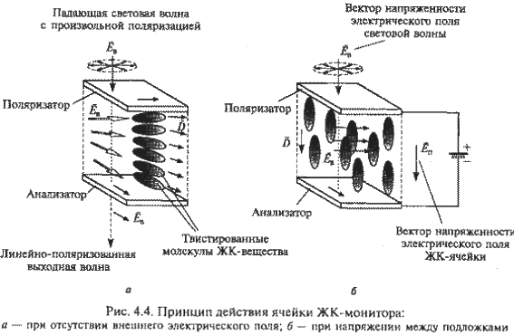
Основным элементом ЖК-монитора является ЖК-экран, состоящий из двух панелей, выполненных из стекла, между которыми размещен слой жидкокристаллического вещества, которое находится в жидком состоянии, но при этом обладает некоторыми свойствами, присущими кристаллическим телам. Фактически это жидкости, обладающие анизотропией свойств (в частности, оптических), связанных с упорядоченностью ориентации молекул. Молекулы жидких кристаллов под воздействием электричества могут изменять свою ориентацию и вследствие этого изменять свойства светового луча, проходящего сквозь них. Следовательно, формирование изображения в ЖК-мониторах основано на взаимосвязи между изменением электрического напряжения, приложенного к жидкокристаллическому веществу, и изменением ориентации его молекул.
Экран ЖК-монитора представляет собой массив отдельных ячеек (называемых пикселами), оптические свойства которых могут меняться при отображении информации. Рис. 4.4 иллюстрирует принцип действия ячейки ЖК-монитора. Панели ЖК-монитора имеют несколько слоев, среди которых ключевую роль играют две панели, выполненные из свободного от натрия и очень чистого стеклянного материала, между которыми и расположен тонкий слой жидких кристаллов. На панелях нанесены параллельные бороздки, вдоль которых ориентируются кристаллы. Панели расположены так, что бороздки на подложках перпендикулярны между собой. Технология получения бороздок состоит в нанесении на стеклянную поверхность тонких пленок из прозрачного пластика. Соприкасаясь с бороздками, молекулы в жидких кристаллах ориентируются одинаково во всех ячейках.
Жидкокристаллическая панель освещается источником света (в зависимости от того, где он расположен, жидкокристаллические панели работают на отражение или на прохождение света). В качестве источников света используются специальные электролюминесцентные лампы с холодным катодом, характеризующиеся низким энергопотреблением. Молекулы одной из разновидностей жидких кристаллов (нематиков) в отсутствие напряжения на подложках поворачивают вектор электрической напряженности электромагнитного поля в световой волне, проходящей через ячейку, на некоторый угол в плоскости, перпендикулярной оси распространения пучка. Нанесение бороздок позволяет обеспечить одинаковые углы поворота для всех ячеек. Фактически каждая ЖК-ячейка представляет собой электронно управляемый светофильтр, принцип действия которого основан на эффекте поляризации световой волны.
Чтобы поворот плоскости поляризации светового луча был заметен для глаза, на стеклянные панели дополнительно наносят два слоя, представляющих собой поляризационные фильтры. Эти фильтры выполняют функции поляризатора и анализатора.
Принцип действия ячейки ЖК-монитора (см. рис. 4.4) в следующем. При отсутствии напряжения между подложками ячейка ЖК-монитора прозрачна, поскольку вследствие перпендикулярного расположения бороздок на подложках и соответствующего закручивания оптических осей жидких кристаллов вектор поляризации света поворачивается и проходит без изменения через систему поляризатор - анализатор (см. рис. 4.4-а). Ячейки, у которых ориентирующие канавки, обеспечивающие соответствующее закручивание молекул жидкокристаллического вещества, расположены под углом 90°, называются твистированными нематическими. При создании между подложками напряжения 3-10 В молекулы жидкокристаллического вещества располагаются параллельно силовым линиям поля (см. рис. 4.4-б). Твистированная структура жидкокристаллического вещества нарушается, и поворота плоскости поляризации проходящего через него света не происходит. В результате плоскость поляризации света не совпадает с плоскостью поляризации анализатора, и ЖК-ячейка оказывается непрозрачной. Напряжение, приложенное к каждой ЖК-ячейке, формируется ПК.
Для вывода цветного изображения на экран выполняется подсветка монитора сзади, так чтобы свет порождался в задней части ЖК-дисплея. Цвет формируется в результате объединения ЖК-ячеек в триады, каждая из которых снабжена светофильтром, пропускающим один из трех основных цветов.
Первые ЖК-мониторы имели диагональ около 8", сегодня они выпускаются с диагональю 19" и более. Увеличение разрешения ЖК-мониторов достигается с помощью специальных технологий.
Технология, при которой закручивание молекул составляет 90°, называется твистированной нематической (TN - Twisted Nematic). Недостатки ЖК-мониторов, реализующих эту технологию, связаны с низким быстродействием; зависимостью качества изображения (яркости, контрастности) от внешних засветок; значительным взаимным влиянием ячеек; ограниченным углом зрения, под которым изображение хорошо видно, а также низкими яркостью и насыщенностью изображения.
Следующим этапом на пути совершенствования ЖК-мониторов было увеличение угла закручивания молекул ЖК-вещества с 90 до 270° с помощью STN-технологии (Super-Twisted Nematic). Использование двух ячеек, одновременно поворачивающих плоскости поляризации в противоположных направлениях, согласно DSTN-технологии (Dual Super-Twisted Nematic), позволило значительно улучшить характеристики ЖК-мониторов.
Для повышения быстродействия ЖК-ячеек используется технология двойного сканирования (DSS - Dual Scan Screens), когда весь ЖК-экран разбивается на четные и нечетные строки, обновление которых выполняется одновременно. Двойное сканирование совместно с использованием более подвижных молекул позволило снизить время реакции ЖК-ячейки с 500 мс (у ЖК-мониторов, реализующих технологию TN) до 150 мс и значительно повысить частоту обновления экрана.
Для получения лучших результатов с точки зрения стабильности, качества, разрешения и яркости изображения используются мониторы с активной матрицей в отличие от применявшихся ранее с пассивной матрицей. Термин пассивная матрица (Passive Matrix) относится к такому конструктивному решению монитора, согласно которому монитор разделен на отдельные ячейки, каждая из которых функционирует независимо от остальных, так что в результате каждый такой элемент может быть подсвечен индивидуально для создания изображения. Матрица называется пассивной, потому что рассмотренные выше технологии создания ЖК-мониторов не могут обеспечить быстродействие при отображении информации на экране. Изображение формируется строка за строкой путем последовательного подвода управляющего напряжения на отдельные ячейки. Вследствие большой электрической емкости отдельных ячеек напряжение на них не может изменяться достаточно быстро, поэтому изображение не отображается плавно и дрожит на экране. При этом между соседними электродами возникает некоторое взаимное влияние, которое может проявляться в виде колец на экране.
В активной матрице используются отдельные усилительные элементы для каждой ячейки экрана, компенсирующие влияние емкости ячеек и позволяющие значительно увеличить быстродействие.
Активная матрица (actice matrix) имеет следующие преимущества по сравнению с пассивной матрицей:
высокая яркость;
угол обзора, достигающий 120-160°, в то время как у мониторов с пассивной матрицей качественное изображение можно наблюдать только с фронтальной позиции по отношению к экрану;
высокое быстродействие, обусловленное временем реакции монитора около 50 мс.
Функциональные возможности ЖК-мониторов с активной матрицей почти такие же, как у дисплеев с пассивной матрицей. Разница заключается в матрице электродов, которая управляет ячейками жидких кристаллов дисплея. В случае с пассивной матрицей разные электроды получают электрический заряд циклическим методом при построчной регенерации дисплея, а в результате разряда емкостей элементов изображение исчезает, так как кристаллы возвращаются к своей изначальной конфигурации. В случае с активной матрицей к каждому электроду добавлен запоминающий транзистор, который может хранить цифровую информацию (двоичные значения 0 или 1), и в результате изображение сохраняется до тех пор, пока не поступит другой сигнал. Такой транзистор, выполняя роль своеобразного коммутирующего ключа, позволяет коммутировать более высокое (до десятков вольт) напряжение, используя сигнал низкого уровня (около 0,7 В). Благодаря применению активных ЖК-ячеек стало возможным значительно снизить уровень сигнала управления и тем самым решить проблему частичной засветки соседних ячеек.
Запоминающие транзисторы производятся из прозрачных материалов, что позволяет световому лучу проходить сквозь них, и располагаются на тыльной части дисплея, на стеклянной панели, которая содержит жидкие кристаллы. Поскольку запоминающие транзисторы выполняются по тонкопленочной технологии, подобные ЖК-мониторы получили название TFT-мониторы (Thin Film Transistor - тонкопленочный транзистор). Тонкопленочный транзистор имеет толщину в диапазоне от 0,1 до 0,01 мкм. Технология TFT была разработана специалистами фирмы Toshiba. Она позволила не только значительно улучшить показатели ЖК-мо-ниторов (яркость, контрастность, угол зрения), но и создать на основе активной ЖК-матрицы цветной монитор.
К основным характеристикам жидкокристаллических мониторов относятся следующие.
Размер экрана ЖК-мониторов находится в пределах от 13 до 16". В отличие от ЭЛТ-мониторов, номинальный размер экрана и размер его видимой области (растра) практически совпадают.
Ориентация экрана у ЖК-монитора в отличие от ЭЛТ-монитора может быть как портретная, так и ландшафтная. В то время как традиционные экраны ЭЛТ-мониторов и ЖК-экраны компьютеров типа Notebook: имеют только ландшафтную ориентацию, обусловленную тем, что поле зрения человека в горизонтальном направлении шире, чем в вертикальном, в ряде случаев (работа с текстами большого объема, Web-страницами) намного удобнее работать с экраном портретной ориентации. ЖК-монитор можно легко развернуть на 90°, при этом ориентация изображения останется прежней.
Поле обзора ЖК-мониторов обычно характеризуется углами обзора, отсчитываемыми от перпендикуляра к плоскости экрана по горизонтали и вертикали. Современные модели ЖК-мониторов обеспечивают значения углов обзора: по горизонтали - от 45° до 70° (вправо и влево); по вертикали - от 15° до 50° (вниз) и от 20° до 70° (вверх).
Разрешение ЖК-монитора определяется размером отдельной ЖК-ячейки, т. е. фиксированным размером пикселов. Например, если LCD-монитор имеет разрешение 1024x768, это значит, что на каждой из 768 линий расположено 1024 электродов, т.е. пикселов. При этом можно использовать и более низкое разрешение. Для этого существуют два метода.
Метод «Centering» (центрирование) состоит в том, что для отображения изображения используется только то количество пикселов, которое необходимо для формирования изображения с более низким разрешением. В результате изображение получается не во весь экран, а только в середине: все неиспользуемые пикселы остаются черными, образуя вокруг изображения широкую черную рамку.
Метод «Expansion» (растяжение) основан на растяжении изображения на весь экран, что приводит к возникновению некоторых искажений и ухудшению резкости.
Яркость - важнейший параметр при выборе ЖК-монитора. Типовая яркость ЖК-монитора 150-200 кд/м2. При этом в центре яркость ЖК-монитора может быть на 25% выше, чем у краев экрана.
Контрастность изображения ЖК-монитора показывает, во сколько раз его яркость изменяется при изменении уровня видеосигнала от минимального до максимального. Приемлемая цветопередача обеспечивается при контрастности не менее 130:1, а высококачественная - при 350:1.
Инерционность ЖК-монитора характеризуется минимальным временем, необходимым для активизации его ячейки, и составляет 30-70 мс, соответствуя аналогичным параметрам ЭЛТ-мониторов.
Палитра ЖК-мониторов, по сравнению с обычными, ограничена определенным количеством воспроизводимых на экране оттенков цветов. Типовой размер палитры современных ЖК-мониторов составляет 256K (262 144) или 16M (16 777 216) оттенков цветов.
Массогабаритные характеристики и энергопотребление выгодно отличают ЖК-мониторы от ЭЛТ-мониторов. Масса большинства моделей не превышает нескольких килограмм, а толщина экрана - 20 мм. Потребляемая мощность в рабочем режиме не превышает 35-40 Вт.
Для просмотра фильма "Как это работает: ЖК-монитор (Discovery Chanel)" нажмите кнопку ВОСПРОИЗВЕДЕНИЕ.
Плазменные дисплеи (Plasma Display Panel - PDP) создаются путем заполнения пространства между двумя стеклянными поверхностями инертным газом, например аргоном или неоном. Затем на стеклянную поверхность наносят миниатюрные прозрачные электроды, на которые подается высокочастотное напряжение. Под действием этого напряжения в прилегающей к электроду газовой области возникает электрический разряд. Плазма газового разряда излучает свет в ультрафиолетовом диапазоне, который вызывает свечение частиц люминофора в диапазоне, видимом человеком.
Фактически каждый пиксел на экране работает как обычная лампа дневного света. Высокая яркость и контрастность наряду с отсутствием дрожания являются важнейшими преимуществами таких мониторов. Кроме того, угол по отношению к нормали, под которым можно увидеть изображение на плазменных мониторах, существенно больше, чем у ЖК-мониторов. Основными недостатками такого типа мониторов являются высокая потребляемая мощность, возрастающая при увеличении диагонали монитора, и низкая разрешающая способность, обусловленная большим размером элемента изображения. Кроме того, свойства люминофорных элементов со временем ухудшаются, и экран становится менее ярким, поэтому срок службы плазменных мониторов ограничен 10 000 ч, что составляет около 5 лет при интенсивном использовании. Из-за этих ограничений подобные мониторы используются пока только для конференций, презентаций, информационных щитов, т.е. там, где требуются большие размеры экрана для отображения информации. Такие крупнейшие производители, как Fujitsu, Matshushita, Mitsubishi, NEC, Pioneer и др., начали производство плазменных мониторов с диагональю 40" и более.
Для просмотра фильма "Как это работает: плазменный экран (Discovery Chanel)" нажмите кнопку ВОСПРОИЗВЕДЕНИЕ.
Электролюминесцентные мониторы (Electric Luminiescent Displays - ELD) по своей конструкции аналогичны ЖК-мониторам. Принцип действия электролюминесцентных мониторов основан на явлении испускании света при возникновении туннельного эффекта в полупроводниковом p-n-переходе. Такие мониторы имеют высокие частоты развертки и яркость свечения, кроме того, они надежны в работе. Однако они уступают ЖК-мониторам по энергопотреблению, поскольку на ячейки подается относительно высокое напряжение — около 100 В. При ярком освещении цвета электролюминесцентных мониторов тускнеют.
Мониторы электростатической эмиссии (Field Emission Displays - FED) являются сочетанием традиционной технологии, основанной на использовании ЭЛТ, и жидкокристаллической технологии. Мониторы FED основаны на процессе, который несколько похож на тот, что применяется в ЭЛТ-мониторах, так как в обоих методах применяется люминофор, светящийся под воздействием электронного луча. В качестве пикселов применяются такие же зерна люминофора, как и в ЭЛТ-мониторе, что позволяет получить чистые и сочные цвета, свойственные обычным мониторам. Однако активизация этих зерен производится не электронным лучом, а электронными ключами, подобными тем, что используются в ЖК-мониторах, построенных по TFT-технологии. Управление этими ключами осуществляется специальной схемой, принцип действия которой аналогичен принципу действия контроллера ЖК-монитора.
Для функционирования монитора электростатической эмиссии необходимо высокое напряжение - около 5000 В. Энергопотребление мониторов электростатической эмиссии значительно выше, чем ЖК-мониторов, но на 30% ниже, чем энергопотребление ЭЛТ-мониторов с экраном того же размера. В настоящее время эта технология обеспечивает наилучшее качество изображения среди всех плоскопанельных мониторов и самую низкую инерционность (около 5 мкс).
Органические светодиодные мониторы (Organic Light-Emitting Diode Displays - OLEDs), или LEP-мониторы (Light Emission Plastics - светоизлучающий пластик), по своей технологии похожи на ЖК и ELD-мониторы, но отличаются материалом, из которого изготавливается экран: в LEP-мониторах используется специальный органический полимер (пластик), обладающий свойством полупроводимости. При пропускании электрического тока такой материал начинает светиться.
Основные преимущества технологии LEP по сравнению с рассмотренными:
Выбор той или иной модели монитора зависит от характера информации, с которой будет работать пользователь, и задач, которые он ставит перед собой, а также от суммы выделенных средств на приобретение монитора. Российский рынок мониторов постоянно пополняется новыми моделями. Если модель уже выбрана, при выборе конкретного экземпляра полезно следовать приведенным ниже рекомендациям.
При выборе монитора следует провести тестирование качества выводимого на экран монитора изображения с помощью специальный утилиты, например, Nokia Monitor Test. В случае отсутствия специальных утилит используют визуальный контроль качества. Предварительно необходимо включить монитор и дать ему прогреться не менее 20 мин. После непрерывной работы в течение 1,5-2 ч можно заметить такой тип брака, как появление на экране слабо выраженных нарушений чистоты тона, хорошо заметных на белом фоне и с большого расстояния. На некоторых мониторах такой эффект может выражаться достаточно сильно. Например, весь экран может приобрести голубоватый оттенок, а пятна на нем — желтоватый. Подобные проблемы связаны с термодеформацией маски ЭЛТ-монитора.
Проверка фокусировки электронных пушек как в центре экрана, так и по углам производится путем наблюдения темного текста на светлом фоне в центре и в углах экрана. Буквы должны быть четкими и хорошо читаемыми, а на краях экрана пикселы не должны размазываться или двоиться.
Проверка сведния может быть выполнена путем наблюдения белых линий, отображаемых на черном фоне. Если на линии появляются полосы другого цвета, воспроизведение на данном мониторе мелких объектов, таких, как символы или линии, может быть невысокого качества.
Геометрические искажения можно выявить путем перемещения объекта с постоянными размерами, например приложением любого окна небольшого размера к экрану и измерением его размеров в разных частях экрана. Если размеры окна изменяются в разных частях экрана, значит, присутствует геометрическое искажение, которое, скорее всего, нельзя исправить, особенно если в мониторе не предусмотрены изменяемые параметры настройки геометрии в достаточном количестве.
Цветопередача может быть проконтролирована путем последовательного отображения на экране чистых красного, зеленого и синего цветов и наблюдения за тем, как эти цвета отображаются на экране. Если цвет отображается неправильно, значит, у монитора неверная цветопередача.
Неравномерность засветки выявляют при выведении на экран полностью белого изображения. Яркость должна быть равномерной по всей площади и не должно быть заметно никаких явных цветных или темных пятен.
Муар, или комбинационное искажение, проявляется на фоне или вокруг объектов в виде контуров линий, волн, ряби и т.д. Муар является следствием естественной интерференции, которая проявляется на всех ЭЛТ-мониторах. Муар зависит от используемого разрешения и размера монитора и лучше всего заметен именно в высоких разрешениях на мониторах с прекрасно сфокусированными лучами. Если виден муар, значит, монитор хорошо сфокусирован. Если муара вообще не наблюдается, значит, у монитора плохая фокусировка. В некоторых мониторах предусмотрена регулировка муара, что позволяет сделать его незаметным.
Проекционный аппарат (проектор) (от латинского projicio - бросаю вперед) - оптико-механический прибор для проецирования на экран увеличенных изображений различных объектов.
Принцип действия проекционных аппаратов заключается в проецировании с помощью оптической системы на экран изображения объекта, нанесенного на тонкой полупрозрачной пленке, при освещении его мощной проекционной лампой. В результате изображение может быть показано большой аудитории.
Первый проектор изобрел немецкий физик и математик Афанасий Кирхер в 1640 г., назвав свой аппарат «волшебный фонарь». Аппарат, в котором источником света служила свеча, позволял создавать на экране теневые проекции изображения людей, животных или предметов, вырезанных из картона.
Современные проекционные аппараты служат для демонстрации прозрачных объектов: диапозитивов (кодопроекторы), диафильмов (диапроекторы), непрозрачных (эпипроекторы), а также тех и других (эпидиапроекторы). Проекционные аппараты применяются для презентаций, в качестве технических средств обучения. Поскольку в настоящее время весомая часть информации находится в электронном виде, возникла необходимость проецирования на экран изображения с экрана монитора.
Современные проекционные аппараты, подключаемые к ПК, позволяют проецировать на большой экран изображение с экрана монитора. В компьютерных проекторах в качестве источника проецируемого изображения используется специальный электронно-управляемый модулятор, на который подается сигнал от видеоадаптера РС. Такой модулятор выполняет функцию диапозитивной пленки или слайда в обычном проекторе и используется в качестве управляемого светофильтра, модулирующего световой поток от проекционной лампы.
Конструкции и принципы действия модуляторов отличаются большим разнообразием, хотя в основном они построены на базе ЖК-панелей. Все компьютерные проекторы можно разбить на две группы:
универсальные проекторы (оверхед-проекторы) общего назначения; в качестве источника изображения в них используется специальный внешний модулятор - ЖК-панель;
мультимедийные проекторы со встроенным модулятором.
На компьютерный проектор подается RGB-сигнал, снимаемый с выхода видеоадаптера ПК, а также обычный видеосигнал, источником которого может быть бытовая или полупрофессиональная видеоаппаратура. Проекторы, в которых в качестве входного используется только видеосигнал, называются видеопроекторами.
Оверхед-проектор (Over Head Project - проектор, расположенный над головой) - проекционный аппарат, в котором изображение от источника проецируется на экран при помощи наклонного проекционного зеркала. Конструктивно в зависимости от места размещения проекционной лампы оверхед-проекторы разделяются на отражательные и просветные.
Отражательные проекторы представляют собой малогабаритные устройства, предназначенные для проецирования изображений, нанесенных на специальную прозрачную пленку. Отражательные проекторы не могут использоваться совместно с ЖК-панелями, поскольку мощность проекционной лампы у них невелика. 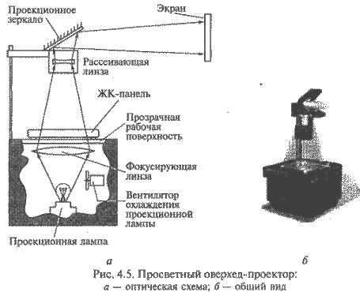
Просветные проекторы (рис. 4.5) отличаются тем, что у них проекционная лампа размещается под рабочей поверхностью устройства внутри его основания, мощность лампы увеличена в десятки раз и имеется ее принудительное охлаждение с помощью вентилятора, как показано на оптической схеме рис. 4.5-а. Это позволяет использовать в качестве источника изображения не только прозрачные пленки, но и менее прозрачные ЖК-панели.
ЖК-панель, подключенную к видеоадаптеру ПК, устанавливают на прозрачную рабочую поверхность проектора как прозрачную пленку. Световой поток от проекционной лампы через специальную фокусирующую линзу освещает ЖК-панель и, проходя через нее и рассеивающую линзу, поступает на проекционное зеркало.
По конструкции и габаритам ЖК-панель напоминает дисплей ПК типа Notebook, причем на ее корпусе расположены органы управления параметрами изображения.
Общий вид проектора дан на рис. 4.5-б.
Качество изображения, формируемого оверхед-проектором, подключаемым к компьютеру, определяется характеристиками ЖК-панели, которые аналогичны характеристикам плоскопанельных ЖК-мониторов: размер, максимальное разрешение, количество воспроизводимых оттенков цветов, яркость. В зависимости от разрешения экрана различают ЖК-панели следующих типов с соответствующим максимальным разрешением экрана: VGA-панели (640x480); SVGA-панели (800х600); XGA-панели (1024x768); SXGA-панели (1280х1024).
В VGA-панелях, рассчитанных на небольшую аудиторию, в качестве экрана используется пассивная ЖК-матрица, основанная на применении технологии DSTN; в более качественных панелях используется активный TFT-экран.
Помимо основной задачи - преобразования электрического сигнала от видеоадаптера в изображение на экране с целью его последующего проецирования на большой внешний экран, отдельные модели ЖК-панелей обладают рядом дополнительных возможностей, полезных, например, в учебном процессе, при проведении презентаций: дистанционное управление (ДУ); возможность увеличения изображения в целом или его фрагмента. При реализации функции «Указка» ЖК-панель на своем экране формирует маркер, напоминающий указатель мыши, положением которого можно управлять с помощью пульта ДУ. Функция «Замораживание» предусматривает запоминание и фиксацию на экране текущего изображения на время подготовки компьютера или презентационной программы к показу следующего сюжета.
Для управления работой ЖК-панели может использоваться дистанционная мышь, соединенная с адаптером, подключенным к последовательному порту компьютера при помощи кабеля или по радиоканалу.
В мультимедийном проекторе проекционная лампа, ЖК-матрица и оптическая система конструктивно размещаются в одном корпусе, что делает их похожими на диапроекторы, предназначенные для просмотра слайдов или диафильмов. По принципу действия мультимедийный проектор не отличается от оверхед-проектора: изображение создается с помощью мощной проекционной лампы и встроенного в проектор электронно-оптического модулятора, управляемого сигналом видеоадаптера ПК, а затем посредством оптической системы проецируется на внешний экран. Основным отличием в мультимедийных проекторах является конструкция модулятора и способы построения и переноса изображения на экран. В зависимости от конструкции модулятора проекторы бывают следующих типов: TFT-проекторы; полисиликоновые проекторы и DMD/DLP-проекторы.
В зависимости от способа освещения модулятора мультимедийные проекторы подразделяют на проекторы просветного и отражательного типов.
В TFT-проекторах, относящихся к проекторам просветного типа, в качестве модулятора используется малогабаритная цветная активная ЖК-матрица, выполненная по технологии TFT. Принцип действия мультимедийного ТРТ-проектора просветного типа иллюстрирует рис. 4.6. 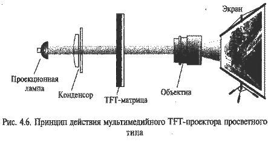
Основным элементом установки является миниатюрная ЖК-матрица, выполненная по технологии TFT, как и ЖК-экран плоскопанельного цветного монитора. Равномерное освещение поверхности ЖК-матрицы достигается за счет применения системы линз, называемой конденсором.
Полисиликоновые мультимедийные проекторы также относятся к проекторам просветного типа и применяются в том случае, когда необходимо получить более яркое изображение. В них используется не одна цветная TFT-матрица, а три монохромных миниатюрных ЖК-матрицы размером около 1,3". Каждая из матриц формирует монохромное изображение красного, зеленого или синего цвета. Оптическая система проектора, как показано на рис. 4.7, обеспечивает совмещение трех монохромных изображений, в результате чего формируется цветное изображение. Такая технология получила название полисиликоновой (р-Si). Каждый элемент полисиликоновой матрицы содержит только один тонкопленочный транзистор, поэтому его размер меньше, чем размер элемента TFT-матрицы, что позволяет повысить четкость изображения.
Цветоделителъная система полисиликонового проектора, состоящая из двух дихроичных (D1, D2) и одного обычного (N1) зеркал, используется для разложения белого света проекционной лампы на три составляющие основных цветов (красный, зеленый, синий). Цветоделение необходимо выполнить для того, чтобы подать на каждую из трех монохромных матриц световой поток соответствующего цвета. Дихроичное (цветоделительное) зеркало пропускает свет только одной длины волны (один цвет) и представляет собой хорошо отполированную стеклянную подложку с нанесенной на него тонкой пленкой из диэлектрического материала. 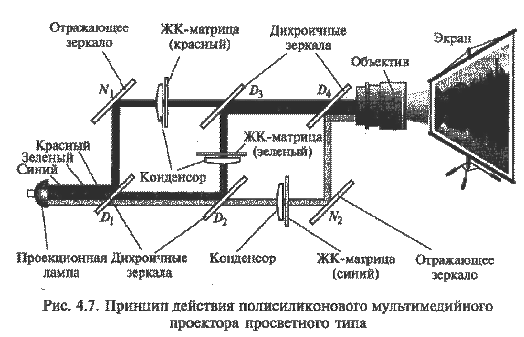
Система цветосмешения полисиликонового проектора состоит из двух дихроичных (D3, D4) и одного отражающего (N2) зеркал и служит для получения цветного изображения путем наложения одного на другой трех монохромных изображений, создаваемых соответствующими ЖК-матрицами.
Полисиликоновые проекторы обеспечивают более высокое качество изображения, яркость и насыщенность цветов по сравнению с проекторами на основе TFT-матриц. Они более надежны в работе и долговечны, поскольку три ЖК-матрицы работают в менее напряженном тепловом режиме, чем одна. Благодаря этому полисиликоновые проекторы можно использовать при проецировании изображения на большой экран в таких помещениях, как конференц-залы, кинотеатры.
ЖК-проекторы отражательного типа предназначены для работы в больших аудиториях и отличаются по принципу действия: модуляции подвергается не проходящий, а отраженный световой поток. 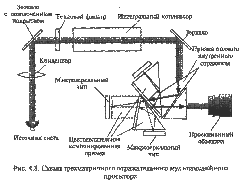
В настоящее время наиболее используемой в конструкциях ЖК-проекторов отражательного типа является технология DMD/DLP, разработанная фирмой Texas Instruments.
В DMD/DLP-проекторах отражательного типа излучение источника света модулируется изображением при отражении от матрицы. В DMD/DLP-проекторах в качестве отражающей поверхности используется матрица, состоящая из множества электронно-управляемых микрозеркал, размер каждого из которых около 1 мкм. Каждое микрозеркало имеет возможность отражать падающий на него свет либо в объектив, либо в поглотитель, что определяется уровнем поданного на него электрического сигнала. При попадании света в объектив образуется яркий пиксел экрана, а в поглотитель - темный. Такие матрицы обозначаются аббревиатурой DMD (Digital Micromirror Device - цифровой микрозеркальный прибор), а технология, на которой основан их принцип действия, - DLP (Digital Light Processing - цифровая обработка света).
Как правило, в одной DMD-матрице содержится около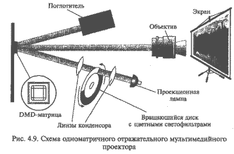 848х600 = 508.800 микрозеркал, что превосходит SVGA-разрешение (800x600 = 480.000 пикселов).
Для получения цветного изображения используются проекторы двух вариантов: с тремя или одной DMD-матрицей. Трехматричный проектор, схема которого дана на рис. 4.8, по способу формирования цветного изображения аналогичен полисиликоновому (см. рис. 4.7).
В одноматричных DMD/DLP-проекторах полный цветной кадр формируется в результате последовательного наложения трех быстро меняющихся монохромных кадров: черно-красного, черно-зеленого и черно-синего. Смена монохромных кадров на экране незаметна благодаря инерционности человеческого зрения. Монохромные кадры образуются при последовательном освещении DMD-матрицы лучом красного, зеленого и синего цветов. Луч каждого цвета образуется за счет пропускания светового потока от проекционной лампы через вращающийся диск с красным, зеленым и синим светофильтрами, как это показано на схеме одноматричного проектора (рис. 4.9). Управление микрозеркалами синхронизировано с поворотом светофильтра.
По сравнению с ЖК-технологиями технология DLP обладает следующими преимуществами: практически полным отсутствием зернистости изображения, высокой яркостью и равномерностью ее распределения. К недостаткам одноматричных DMD-проекторов следует отнести заметное мелькание кадров.
Устройства формирования объемных (трехмерных) изображений появились в качестве весьма дорогостоящих и недостаточно совершенных элементов системы виртуальной реальности. Однако в настоящее время эти устройства интенсивно совершенствуются, постепенно превращаясь в непременный атрибут домашнего мультимедийного ПК, поскольку объемный характер изображения имеет важнейшее значение для создания у пользователя подсознательного ощущения реальности наблюдаемой сцены.
По своей конструкции такие устройства принципиально отличаются от традиционных мониторов, поскольку в их основе лежит способ формирования трехмерных изображений, основанный на эффекте бинокулярного зрения, или стереозрения.
Особенности восприятия человеком объемных изображений определяются следующими факторами: первичными (врожденными), основанными на использовании бинокулярного зрения, и вторичными, основанными на накопленном человеком опыте ориентации в пространстве и позволяющими оценить глубину наблюдаемого объекта по косвенным признакам, доступным при монокулярном зрении.
Важнейшими, безусловно, являются вторичные факторы. Поэтому в данной главе рассмотрим устройства отображения, основанные именно на этом свойстве, т.е. использующие бинокулярное зрение человека.
Объемное восприятие объектов возможно как при бинокулярном, так и при монокулярном зрении, поэтому иллюзию трехмерности изображения можно создать при помощи традиционных двухмерных устройств отображения (телевизора, монитора). Например, фотоснимок сам по себе является двухмерным, плоским изображением, однако при его просмотре человек подсознательно оценивает его особенности, благодаря чему создается достаточно четкое представление о форме и пространственном положении изображенных объектов.
Особенности объемного изображения (тени, взаимное положение и т.д.) можно создавать на искусственных моделях виртуального компьютерного мира. Сегодня бурно развивается новая технология, которую принято называть трехмерной графикой, или 3D. В основе этой технологии лежит такой подход: все объекты компьютерного мира описываются в трехмерной системе координат. Имея математическое описание трехмерного объекта, можно корректно рассчитать его двухмерную проекцию на плоскость экрана, которая будет обладать всеми свойствами трехмерного объекта. Поскольку объем вычислений, необходимый для расчета трехмерной сцены, исключительно велик, эту работу выполняют специализированные графические процессоры, называемые ускорителями трехмерной графики, или ЗD-акселераторами, которые подробнее будут рассмотрены в подразделе 4.4. Ярким примером ЗD-графики являются многочисленные трехмерные компьютерные игры.
Механизм бинокулярного зрения связан с явлением одновременного раздражения светом горизонтально расположенных несимметричных точек сетчатки глаз. Асимметрия этих точек обусловлена тем, что оба глаза, расположенные один от другого на расстоянии 6-7 см по горизонтали, видят один и тот же объект под разными углами. Благодаря этому проекции объекта на глазном дне каждого глаза оказываются смещенными в горизонтальном направлении. Головной мозг анализирует эти проекции, в результате чего у человека создается ощущение объемности объекта. Практический способ формирования стереоизображения заключается в том, что два изображения одного и того же предмета, как показано на рис. 4.10, проецируемые на каждый глаз, разворачиваются в горизонтальной плоскости один относительно другого на небольшой угол, образуя так называемую стереопару. Такой стереоскоп позволяет видеть объемное изображение за счет раздельного наблюдения каждым глазом двух почти одинаковых плоских изображений, образующих стереопару. 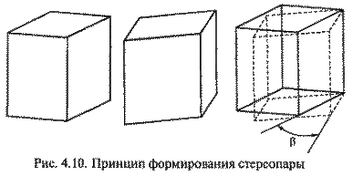
Принцип действия стереоскопа реализуется во всех современных устройствах формирования объемных изображений. Однако используемые в них конкретные способы формирования стереопары отличаются между собой. Чтобы каждый глаз мог видеть только одну половину стереопары, существуют два основных способа:
использование для каждого глаза отдельного экрана (двухэк-ранный способ);
проецирование двух изображений, составляющих стереопару, на общий экран с последующей селекцией элементов стереопары, обеспечивающей их раздельный показ каждому глазу (одноэкранный способ).
Громоздкость двухэкранных устройств был преодолена путем использования компактных ЖК-экранов. Появились и непрерывно совершенствуются удобные устройства отображения в виде шлемов, биноклей или специальных очков. Их принято называть устройствами типа HMD (Head Mounted Diaplay - дисплей, закрепленный на голове). Именно они являются в настоящее время основными устройствами формирования объемных изображений и широко используются в системах виртуальной реальности. Наиболее распространенным устройством отображения типа HMD является шлем виртуальной реальности, или VR-шлем. Термин «виртуальная реальность» может быть переведен как воображаемый, кажущийся, даже «поддельный» мир.
Существует также группа устройств типа HHD (Hend Held Display - дисплей, удерживаемый в руках). Типичным представителем устройств типа HHD являются подключаемые к PC бинокли, в которые вмонтированы две ЖК-матрицы. Бинокли имеют значительно меньший вес и габариты по сравнению с устройствами типа BMD, поэтому они находят все более широкое применение в сфере мультимедиа.
Одноэкранные устройства обеспечивают показ частей трехмерного изображения на одном экране. Однако при этом используется специальное оборудование для разделения (селекции) изображений, составляющих стереопару. Существует несколько способов селекции.
Для просмотра фильма "Как это сделано: проекторы IMAX (Discovery Chanel)" нажмите кнопку ВОСПРОИЗВЕДЕНИЕ.
Шлемы виртуальной реальности (VR-шлемы), называемые также кибершлемами, являются в настоящее время наиболее совершенными устройствами формирования трехмерных изображений. Помимо наличия двух индивидуальных экранов для каждого глаза VR-шлемы, благодаря своей конструкции, обеспечивают отсечение поля периферийного зрения человека, что усиливает эффект проникновения в виртуальный компьютерный мир.
В VR-шлемах используются миниатюрные экраны, выполненные на основе активных ЖК-матриц. Каждая из ЖК-матриц формирует цветное изображение, которое, благодаря особой конструкции шлема, видит только один глаз. Помимо экранов VR-шлем снабжен стереофоническими головными телефонами и микрофоном. Узел шлема, объединяющий в себе эти матрицы и органы регулировки, называют визором. Визор дает возможность регулировать расстояние между матрицами по горизонтали, которое должно соответствовать расстоянию между зрачками пользователя, называемому IPD (Inter Pupil Distance). Визоры некоторых моделей шлемов оборудованы специальной оптической системой автоматического определения IPD, исключающей необходимость в индивидуальной настройке шлема.
Основным недостатком VR-шлема является недостаточно высокое разрешение стереоскопического изображения. Это обусловлено ограниченным количеством элементов ЖК-матрицы и малым расстоянием между глазом и визором, что делает зернистость ЖК-матриц заметной.
Важнейшей особенностью VR-шлемов является наличие так называемой системы виртуальной ориентации (CBO) (Virtual Orientation System - VOS), которая отслеживает движение головы и в соответствии с ним корректирует изображение на экранах. В случае поворота головы в одну сторону панорамное изображение «прокручивается» через ЖК-матрицы в противоположном направлении. В результате у пользователя возникает иллюзия стабильности наблюдаемой картины, ощущение реальности изображения. В зависимости от принципа действия и типа используемого поля различают магнитные, ультразвуковые и инерциальные CBO.
Магнитные СВО распространены наиболее широко. В них используются миниатюрные магнитные датчики (катушки индуктивности). Магнитная СВО включает в себя блок внешних неподвижных передатчиков, выполняющих роль радиомаяков; датчик-приемник, расположенный на шлеме; системный электронный блок, который формирует электрические сигналы, поступающие на передатчик, и обрабатывает сигналы, принятые приемником. Интенсивность и фаза принятых сигналов зависят от расстояния между передающими и приемными катушками, а также от их взаимной ориентации. Обрабатывая передаваемые и принимаемые сигналы, системный электронный блок вычисляет пространственные координаты приемника относительно передатчика. Результаты вычислений передаются в РС через стандартный последовательный интерфейс RS-232 с частотой 50-60 Гц.
В ультразвуковых СВО вместо магнитных используются малогабаритные пьезокерамические преобразователи, выполняющие функции передатчиков и приемников. Обычно используются три передатчика и приемника, размещенные в шлеме. Системный блок посылает на передатчики электрический сигнал и регистрирует ультразвуковой сигнал. Измеряя временную задержку между посланным и принятым сигналом, а также зная скорость распространения звуковой волны (около 330 м/с), можно достаточно точно определить расстояние между передатчиком и приемником. Путем обработки результатов измерений расстояния между тремя парами датчиков рассчитывают положение и ориентацию шлема (головы пользователя) в пространстве.
Инерциалъные СВО используются в VR-шлемах моделей, предназначенных в основном для профессионального применения. Свое название они получили благодаря использованию в них имерциальных датчиков-гироскопов и акселерометров, не требующих для своей работы магнитных или ультразвуковых полей. С их помощью создается независимая инерциальная система координат, в которой отслеживается положение головы пользователя.
В качестве входного сигнала для VR-шлема может использоваться либо видеосигнал от бытовой видеоаппаратуры, либо RGB-сигнал видеоадаптера ПК. VR-шлемы с визорами, способными обеспечить разрешение не хуже 640 х 480, обычно рассчитаны на подключение непосредственно к видеоадаптеру ПК.
Помимо визора VR-шлем оборудован высококачественной стереофонической аудиосистемой. Источником звука может быть либо телевизор (видеомагнитофон), либо звуковая карта компьютера.
Модели VR-шлемов крайне разнообразны по техническим решениям и возможностям и по праву считаются продуктами самых высоких компьютерных технологий. На российском рынке известны такие модели, как VFXI Headger VR System, VFX3D, семейство шлемов I-Glasses фирмы I/o Display Sistems, кибершлем V8 фирмы Vitrual Research Systems. Конструкции шлемов постоянно совершенствуются: если первый из названных имел массу 1,3 кг, то последний - 821 г.
Шлемы виртуальной реальности в настоящее время являются наиболее удачными из всех устройств, основанных на использовании особенностей бинокулярного зрения. Однако качество изображения, получаемого с их помощью, недостаточно высокое вследствие низкого разрешения. В связи с этим перспективы VR-шлемов неразрывно связаны с созданием новых ЖК-матриц.
3D-очки являются наиболее распространенными и доступными по цене устройствами формирования трехмерных изображений. Принцип их действия основан на использовании затворного метода разделения элементов стереопары. ЗD-очки используются в качестве дополнения к обычному монитору и могут подсоединяться к видеоадаптеру ПК при помощи гибкого провода длиной 2-3 м.
Принцип действия ЗВ-очков заключается в том, что при последовательном отображении на мониторе левой и правой частей стереопары синхронно меняется прозрачность стекол очков. В результате каждый глаз видит только свою часть стереопары, что обеспечивает стереоэффект. Чтобы стекла ЗD-очков могли «терять прозрачность» по командам компьютера, их выполняют по технологии ЖК-ячейки просветного типа, использующей эффект поляризации. Поэтому ЗD-очки иногда называют поляризационными. Поскольку прозрачность стекол ЗD-очков изменяется синхронно со сменой изображения на экране вследствие управления сигналами видеоадаптера, их называют активными.
Таким образом, термины «активные поляризационные очки», «3D-очки» — синонимы; они обозначают устройства, работающие на одинаковом принципе.
Между ЗD-очками и шлемами виртуальной реальности есть принципиальные различия:
В большинстве моделей ЗD-очков контроллер выполняется в виде отдельного внешнего блока, хотя в настоящее время появилось много видеоадаптеров с интегрированными контроллерами для ЗD-очков.
Современный рынок ЗD-очков достаточно разнообразен. Преимущественно используются беспроводные модели, обеспечивающие связь с ПК с помощью инфракрасного передатчика, аналогичного телевизионному пульту управления.
Одним из направлений получения стереоскопического изображения является использование ЗD-мониторов. Существуют устройства двух типов, которые можно отнести к категории ЗD-мониторов:
Для работы с плоскопанельными мониторами другого типа 3D-очки не требуются. Принцип действия этого монитора основан на использовании двух разработок фирмы Sony: так называемого двойного расщепителя изображения и специальной фотодиодной системы слежения за положением головы пользователя. Расщепитель изображения состоит из двух прозрачных пластин, между которыми размещен ЖК-экран, как это показано на рис. 4.11. Благодаря этому изображение на ЖК-экране может быть видно только под определенным углом. На экране одновременно отображаются оба элемента стереопары, причем пластины преломляют свет таким образом, что каждый глаз видит только один из элементов стереопары. Чтобы исключить нарушение стереоэффекта, который зависит от угла зрения, при изменении положения головы пользователя, применяется специальная система слежения за положением, в которой в качестве датчиков используется линейка фотодиодов, расположенная над основным экраном. Эта система формирует электрический сигнал, связанный с изменением угла зрения пользователя, под действием которого изменяется коэффициент преломления панелей, обеспечивая устойчивый стереоэффект. Такой принцип действия заложен в основу 15-дюймового ЗD-экрана ЖК-монитора фирмы Sony. Оптимальное расстояние до экрана составляет около 60 см, а максимальное разрешение - 1024x768. 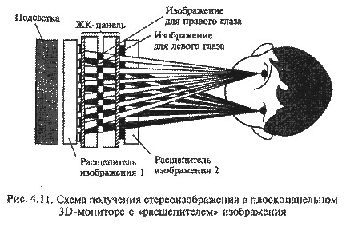
Мониторы с поляризационным фильтром обеспечивают формирование трехмерного изображения с помощью обычного монитора на основе ЭЛТ, оборудованного специальным внешним электронно-управляемым поляризационным фильтром, например, Monitor Zscreen 2000 производства фирмы StereoGraphics. Этот фильтр используется вместе с пассивными поляризационными очками. Фильтром управляют сигналы специального контроллера, подключаемого к выходу видеоадаптера, подобно контроллеру ЗD-очков. Однако, в отличие от активных очков, у фильтра изменяется не прозрачность, а направление поляризации проходящей через него световой волны.
Контроллер управляет фильтром таким образом, что нечетные кадры оказываются поляризованными в одном направлении, а четные — в другом. В свою очередь, одно стекло пассивных очков пропускает свет с одним направлением поляризации, а другое — с другим. В результате один глаз видит только одну часть стереопары, а второй — только вторую.
Таким образом, в фильтре реализован такой же, как и в активных ЗD-очках, затворный метод разделения элементов стереопары. Достоинством данного устройства, по сравнению с активными ЗD-очками, является возможность использования легких и удобных пассивных очков.
Мониторы с поляризационными фильтрами выпускаются в 17- и 21-дюймовом исполнении. К числу их недостатков следует отнести ограничение на частоту кадров, наличие ореолов на контурах объектов приводящих к взаимным искажениям, а также прозрачность около 32 %, что значительно снижает яркость изображения.
ЗD-проекторы предназначены для коллективного просмотра объемных изображений в больших аудиториях. Главными отличиями ЗD-проекторов от мультимедийных являются сложная конструкция оптической системы и наличие специальных поляризационных фильтров (встроенных или внешних), при помощи которых производится селекция элементов стереопары.
Для реализации последовательного метода показа элементов стереопары частота кадров проектора должна быть в два раза выше обычной. Мультимедийные проекторы на основе ЖК-матриц не удовлетворяют этому требованию из-за инерционности молекул ЖК-вещества. Поэтому в качестве источника изображения в ЗD-проекторах применяется электронно-лучевая трубка, как показано на рис 4.12, экран которой покрыт люминофором, дающим высокую яркость свечения и малое время послесвечения (см. рис. 4.12, а). Высокая яркость изображения, формируемого ЗD-проектором на проекционном экране, обеспечивается использованием трех моноромxных ЭЛТ для каждого из основных цветов (R, G, B). На каждой ЭЛТ закреплен индивидуальный объектив. Проектор оснащен сложной электронной системой регистрации. Система автоматически определяет расстояние от проектора до экрана и на основе полученных данных с высокой точностью совмещает три монохромных изображения, проецируемых тремя объективами. ЭЛТ и объектив представляют собой единый конструктивный узел (см. рис. 4.12, б). 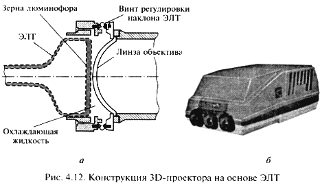
Люминофор экрана светится очень ярко, поэтому для предотвращения перегрева экран ЭЛТ охлаждают с помощью специальной жидкости, находящейся между экраном ЭЛТ и линзой объектива. Специальные регулировочные винты служат для ручной юстировки объектива. Примером такого устройства является проектор BARCOGRAPHICS 1209s фирмы BARCO. Проектор способен отображать видеосигнал от различных источников: от видеомагнитофона формата УН5 до профессиональных графических станций, работающих с разрешением 2500x2000. Высокое разрешение проецируемого изображения связано с отсутствием зернистости люминофора, поскольку в монохромных ЭЛТ, которыми оснащен проектор, используется сплошное люминофорное покрытие.
Для создания стереоэффекта при проецировании изображения необходимо обеспечить раздельное наблюдение элементов стереопары левым и правым глазом. Для этого используются один или два проектора и поляризационные очки (активные или пассивные) для каждого зрителя. В зависимости от используемой комбинации такого оборудования различают четыре схемы получения стереоскопической проекции.
Активная схема предполагает использование одного проектора на основе ЭЛТ, выполняющего последовательный показ элементов стереопары, в то время как зрители пользуются беспроводными активными поляризационными очками затворного типа.
Пассивная схема 1 строится с помощью одного проектора на основе ЭЛТ с внешним электронно-управляемым поляризационным затвором, последовательно показывающим элементы стереопары с различной поляризацией. Зрители используют пассивные поляризационные очки.
Пассивная схема 2 предполагает использование двух проекторов на основе ЭЛТ, выполняющих одновременный показ элементов стереопары. Каждый проектор оборудован внешним пассивным поляризатором, обеспечивающим различную поляризацию элементов стереопары, а зрители пользуются пассивными очками.
Пассивная схема 3 основана на использовании двух ЖК-проекторов, обеспечивающих одновременный показ элементов стереопары. Зрители пользуются пассивными очками.
Видеоадаптер (видеокарта) является компонентом видеосистемы ПК, выполняющим преобразование цифрового сигнала, циркулирующего внутри ПК, в аналоговые электрические сигналы, подаваемые на монитор. По существу, видеоадаптер выполняет роль интерфейса между компьютером и устройством отображения информации (монитором).
По мере развития ПК видеоадаптеры стали реализовывать аппаратное ускорение 2D- и ЗD-графики, обработку видеосигналов, прием телевизионных сигналов и многое другое. Современный видеоадаптер, называемый Super VGA (Super Video Graphics Adapter), или SVGA, представляет собой универсальное графическое устройство.
Видеоадаптер определяет следующие характеристики видеосистемы:
Принцип действия видеоадаптера состоит в следующем.
Процессор формирует цифровое изображение в виде матрицы N x M n-разрядных чисел и записывает его в видеопамять. Участок видеопамяти, отведенный для хранения цифрового образа текущего изображения (кадра), называется кадровым буфером, или фрейм-буфером.
Видеоадаптер последовательно считывает (сканирует) содержимое ячеек кадрового буфера и формирует на выходе видеосигнал, уровень которого в каждый момент времени пропорционален значению, хранящемуся в отдельной ячейке. Сканирование видеопамяти осуществляется синхронно с перемещением электронного луча по экрану ЭЛТ. В результате яркость каждого пиксела на экране монитора пропорциональна содержимому соответствующей ячейки памяти видеоадаптера.
По окончании просмотра ячеек, соответствующих одной строке растра, видеоадаптер формирует импульсы строчной синхронизации, инициирующие обратный ход луча по горизонтали, а по окончании сканирования кадрового буфера формирует сигнал, вызывающий движение луча снизу вверх. Таким образом, частоты строчной и кадровой развертки монитора определяются скоростью сканирования содержимого видеопамяти, т.е. видеоадаптером.
Режимы работы видеоадаптера, или видеорежимы, представляют собой совокупность параметров, обеспечиваемых видеоадаптером: разрешение, цветовая палитра, частоты строчной и кадровой развертки, способ адресации участков экрана и др.
Все видеорежимы делятся на графические и текстовые. Причем в различных режимах видеоадаптера используются разные механизмы формирования видеосигнала, а монитор в обоих режимах работает одинаково.
Графический режим является основным режимом работы видеосистемы современного ПК, например под управлением Windows. В графическом режиме на экран монитора можно вывести текст, рисунок, фотографию, анимацию или видеосюжет. В графическом режиме в каждой ячейке кадрового буфера (матрицы N x M n-разрядных чисел) содержится код цвета соответствующего пиксела экрана. Разрешение экрана при этом также равно N x M. Адресуемым элементом экрана является минимальный элемент изображения — пиксел. По этой причине графический режим называют также режимом АРА (All Point Addressable - все точки адресуемы). Иногда число n называют глубиной цвета. При этом количество одновременно отображаемых цветов равно 2", а размер кадрового буфера, необходимый для хранения цветного изображения с разрешением N x М и глубиной цвета n, составляет N x М бит.
В текстовом (символьном) режиме, как и в графическом, изображение на экране монитора представляет собой множество пикселов и характеризуется разрешением N x М. Однако все пикселы разбиты на группы, называемые знакоместами, или символьными позициями (Character boxes - символьные ячейки), размером p x q. В каждом из знакомест может быть отображен один из 256 символов. Таким образом, на экране умещается М/q = М1 символьных строк по N/p = N1 символов в каждой. Типичным текстовым режимом является режим 80x25 символов. 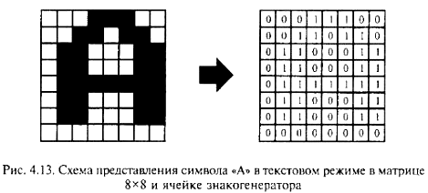
Изображение символа в пределах каждого знакоместа задается точечной матрицей (Dot Matrix). Размер матрицы зависит от типа видеоадаптера и текущего видеорежима. Чем больше точек используется для отображения символа, тем выше качество изображения и лучше читается текст. Точки матрицы, формирующие изображение символа, называются передним планом, остальные - задним планом, или фоном. На рис. 4.13 показана символьная матрица 8x8 пикселов. Допустив, что темной клетке соответствует логическая единица, а светлой - логический ноль, каждую строку символьной матрицы представим в виде двоичного числа. Следовательно, графическое изображение символа можно хранить в виде набора двоичных чисел. Для этой цели используется специальное ПЗУ, размещенное на плате видеоадаптера. Такое ПЗУ называют аппаратным знакогенератором.
Совокупность изображений 256 символов называется шрифтом. Аппаратный знакогенератор хранит шрифт, который автоматически используется видеоадаптером сразу же после включения компьютера (обычно это буквы английского алфавита и набор специальных символов). Адресом ячейки знакогенератора является порядковый номер символа.
Для кодирования изображения символа на экране используются два байта: один - для задания номера символа, второй - для указания атрибутов символа (цвета символа и фона, подчеркивания, мигания, отображения курсора). Если на экране имеется N x М знакомест, то объем видеопамяти, необходимый для хранения изображения, составит N1х М1х 2 байт. Эту область видеопамяти называют видеостраницей. Видеостраница является аналогом кадрового буфера в графическом режиме, но имеет значительно меньший объем. В наиболее распространенном текстовом режиме (80х25 символов) размер видеостраницы составляет 4000 байт, в режиме 40х25 - 2000 байт. На практике для удобства адресации под видеостраницу отводят 4 Кбайт = 4096 байт и 2 Кбайт = 2048 байт соответственно, при этом «лишние» байты (96 и 48) не используются.
Главная особенность текстового режима в том, что адресуемым элементом экрана является не пиксел, а знакоместо. Иными словами, в текстовом режиме нельзя сформировать произвольное изображение в любом месте экрана - можно лишь отобразить символы из заданного набора, причем только в отведенных символьных позициях.
Другим существенным ограничением текстового режима является узкая цветовая палитра - в данном режиме может быть отображено не более 16 цветов.
Таким образом, в текстовом режиме предоставляется значительно меньше возможностей для отображения информации, чем в графическом. Однако важное преимущество текстового режима — значительно меньшие затраты ресурсов ПК на его реализацию.
Переход к более высокому разрешению и большей глубине цвета привел к увеличению загрузки центрального процессора и шины ввода/вывода. В целях разгрузки центрального процессора решение отдельных задач построения изображения было возложено на специализированный набор микросхем (Chipset) видеоадаптера, называемый графическим ускорителем, или акселератором. Акселератор аппаратным путем выполняет ряд действий, направленных на построение изображения.
2D-акселератор - графический ускоритель для обработки двухмерных графических данных (2D), реализует аппаратное ускорение таких функций, как прорисовка графических примитивов, перенос блоков изображения, масштабирование, работа с окнами, мышью, преобразование цветового пространства. Первоначально видеоадаптеры с аппаратным ускорением графических функций делились на две группы: видеоадаптеры с графическим ускорителем (акселератором) и видеоадаптеры с графическим сопроцессором.
Графический акселератор - устройство, выполняющее заданные логические или арифметические операции по жесткому алгоритму, который не может быть изменен.
Графический сопроцессор - более универсальное устройство и работает параллельно с центральным процессором. Основное отличие графического сопроцессора от графического акселератора в том, что сопроцессор можно запрограммировать на выполнение различных задач, поскольку он является активным устройством: имеет возможность, как и центральный процессор, обращаться к системной оперативной памяти и управлять шиной ввода/вывода.
В современных видеоадаптерах объем и сложность графических функций, выполняемых графическим сопроцессором, стали соизмеримы с объемом задач, решаемых центральным процессором ПК. В связи с этим Chipset, составляющий основу современного видеоадаптера с аппаратной поддержкой графических функций, называют графическим процессором.
ЗD-акселераторы предназначены для обеспечения возможности видеть на экране проекцию виртуального (не существующего реально) динамического трехмерного объекта, например, в компьютерных играх. Такой объект необходимо сконструировать, смоделировать его объемное изображение, т.е. задать математическую модель объекта (каждую точку его поверхности) в трехмерной системе координат, аналитически рассчитать всевозможные зрительные эффекты (угол падения света, тени и т.п.), а затем спроецировать трехмерный объект на плоский экран. ЗD-акселератор необходим только в том случае, когда объемное изображение синтезируется компьютером, т.е. создается программно.
& Совокупность приложений и задач, в рамках которых реализуется эта схема построения трехмерного изображения на экране монитора РС, называется трехмерной графикой, или 3D (3-Dimentional - трехмерный).
Синтез ЗD-изображения выполняется путем аналитического расчета различных параметров изображения для создания визуальных эффектов, обеспечивающих ощущение его объемности и реальности. В частности, в процессе синтеза ЗD-изображения выполняются:
1. Построение геометрической модели поверхности объекта путем задания трехмерных координат его опорных точек и уравнений соединяющих их линий. Полученная геометрическая модель представляет собой так называемую каркасную модель объекта (Wireframe). На рис. 4.14 изображена каркасная модель тора, заданного координатами центра 0 (x, y, z ), внутренним радиусом R1 и радиусом сечения R2.
2. Разбиение поверхности полученного объекта на элементарные плоские элементы (прямоугольники или треугольники) - тесселяция (Tesselarion), или триангуляция. Это приводит к тому, что поверхность объекта представляет собой совокупность плоских граней - многоугольников, в частности треугольников, как показано на рис. 4.15. Поверхность объекта воспроизводится точнее при увеличении числа и уменьшении размеров многоугольников (ср. рис. 4.15, а, б).
3. Моделирование движения объекта: его перемещение, вращение и изменение размеров (формы) -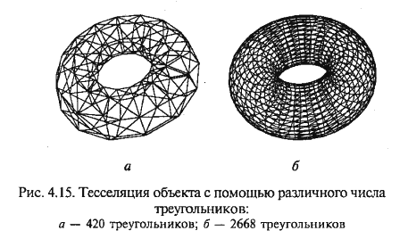 трансформация (transformation) - сводится к стандартному преобразованию координат вершин отдельных граней в виде многоугольников и реализуется путем выполнения множества различных алгебраических операций с использованием тригонометрических функций. На рис. 4.16 показана трансформация формы объекта путем изгиба и скручивания.
4. Расчет освещенности (Lighting) и затенения (Shading) объекта производится в два этапа. Сначала выполняется расчет освещенности каждого элементарного многоугольника с учетом его удаленности от источника света и угла падения светового луча. Чтобы поверхность объекта не выглядела состоящей из множества отдельных плоских граней, как это показано на рис. 4.17, а, применяют методы затенения, т.е. дополнительно производят интерполяцию значений освещенности, позволяющую плавно изменять освещенность каждой грани и скрыть резкие переходы между ними (рис. 4.17, б). 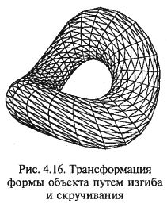
5. Проецирование синтезированного трехмерного объекта на плоскость экрана, т. е. первое, предварительное преобразование трехмерного объекта в совокупность двухмерных. При этом в Z-буфере сохраняется совокупность данных о расстоянии каждой из вершин элементарного многоугольника, образующего грани, до плоскости проецирования. Это позволяет в дальнейшем определить, какие части объекта окажутся видимыми, а какие - нет. Наличие Z-буфера - важнейшее отличие работы с трехмерной графикой от работы с двухмерной.
6. Обработка данных о вершинах элементарных многоугольников, полученных на предыдущих этапах (Triangle Setup), заключающаяся в преобразовании формы представления координат вершин: из чисел с плавающей точкой (вещественных чисел) в целые числа, а также в сортировке вершин и других действиях.
7. Удаление скрытых поверхностей - HRS (Hiden Surface Removal), т. е. исключение из проецирования тех элементов поверхности объекта, которые оказываются невидимыми с точки наблюдения.
8. Закраска элементарных треугольников, или текстурирование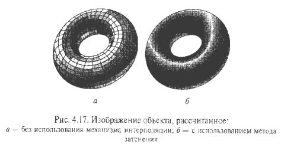, выполняется наложением текстур (Texture Mapping). Текстура (Texture) - это элемент обшивки объекта, т.е. изображение участка его поверхности, которое хранится в виде квадратной растровой картинки, состоящей из текселов (Texel - Texture Element - элемент текстуры). После наложения текстуры (рис. 4.18, а) каркасная модель как бы покрывается своеобразным покрытием - текстурой и становится похожей на реальный объект (рис. 4.18, б). В процессе текстурирования каждый многоугольник, составлявший каркасную модель, заменяется на элемент текстуры, а значение каждого пиксела двухмерного изображения вычисляется по значению соответствующего тексела текстуры.
При текстурировании производится обработка растровой графики, что приводит к необходимости применять различные приемы коррекции изображения, например применение текстур с различным разрешением - мипмэппинг. 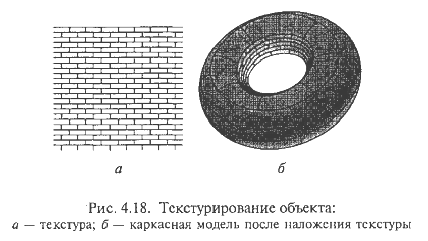
MIP-текстурирование, или мипмэппинг (MIP-Multum In Parvo - много в одном), применяется для устранения пикселизации при приближении к ЗD-объекту. MIP-текстурирование заключается в том, что в памяти акселератора хранятся несколько копий одной и той же текстуры, но с различным разрешением LOD (Level Of Detalization - уровень детализации). Каждая последующая копия текстуры содержит в четыре раза больше пикселов, чем предыдущая. Совокупность всех копий одной и той же текстуры называют MIP-каскадом, пример которого дан на рис. 4.19. В процессе «прорисовки» ближних к наблюдателю поверхностей используются более крупные текстуры, а при прорисовке дальних — более мелкие. Применение мипмэппинга требует значительных объемов памяти акселератора. Для хранения текстуры не в локальной памяти ЗD-акселератора, а в RAM PC и при необходимости быстро их подгружать используется локальная шина AGP с высокой пропускной способностью. 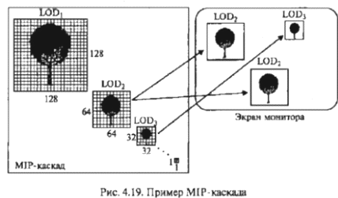
9. Моделирование эффектов прозрачности и полупрозрачности заключается в том, что на основе информации о взаимной прозрачности объектов и среды выполняется коррекция цвета пикселов - так называемое альфа-смешение (Alpha-blending) и затуманивание (Fogging).
10. Коррекция дефектов изображения путем сглаживания - антиалиасинг (Anti-aliasing). Антиалиасинг применяется для устранения дефектов изображения типа «лестничного» эффекта на наклонных линиях, муара. Различают краевой (Edge Anti-aliasing) и полный (Full-screen Anti-aliasing - FSAA) антиалиасинг. В первых моделях игровых ускорителей использовался только краевой антиалиасинг, для современных ЗD-акселераторов обязательным является полный антиалиасинг.
Краевой антиалиасинг заключается в усреднении цвета пикселов на краях (ребрах) грани на основе взвешенного суммирования цветов прилегающих граней. Техника взвешенного суммирования заключается в определении весовых коэффициентов, с которыми суммируются цвета при определении цвета краевого пиксела. При этом полагают, что каждая точка (линия) на краю грани имеет фиксированную, ненулевую площадь, а значения весовых коэффициентов зависят от того, какую часть этой площади перекрывают прилегающие грани. На рис. 4.20 дана иллюстрация техники взвешенного суммирования. 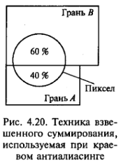
Полный антиалиасинг, или субпикселный антиалиасинг, используется для полного устранения всех дефектов. Суть данного метода в том, что коррекция дефектов выполняется с так называемым виртуальным разрешением, которое выше исходного. При этом каждый пиксел представляется состоящим из нескольких виртуальных субпикселов, над которыми производится антиалиасинг, как показано на рис. 4.21. После коррекции, когда цвета всех субпикселов определены, исходное разрешение восстанавливается.
11. Интерполяция недостающих цветов - (Dithering) используется в том случае, когда в текущем видеорежиме 3D-акселератора для кодирования цвета пиксела используется менее 24 бит (например, в режиме High Color при 16-битном цвете).
12. Окончательное формирование кадрового буфера (Frame Buffer) - области памяти ЗD-акселератора, в которую помещается спроецированное двухмерное изображение. Кадровый буфер используется для формирования выходного, аналогового видеосигнала ЗD-ускорителя. 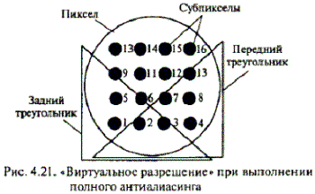
Для ускорения процесса создания изображения используется механизм двойной буферизации, при котором выделяется память одновременно для двух смежных кадров: построение следующего кадра начинается еще до того, как закончится отображение предыдущего. В результате обеспечивается более плавная смена кадров.
13. Постобработка (Post-proccesing) применяется в том случае, когда требуется реализовать какие-либо двухмерные эффекты над подготовленным кадром как единым целым.
Этапы 1-6 ЗD-конвейера образуют его геометрическую стадию, на которой выполняются интенсивные тригонометрические вычисления с помощью CPU. Однако существует тенденция обеспечения современных игровых ЗD-акселераторов специальным процессором, обеспечивающим аппаратное ускорение выполнения геометрической стадии ЗD-конвейера.
Этапы 7-13 ЗD-конвейера образуют стадию прорисовки объекта, или стадию рендеринга (Rendering - изображение, рисование, визуализация). На этой стадии все действия выполняются уже с растровыми объектами, состоящими из отдельных, дискретных элементов - пикселов и текселов. Выполняемые на стадии рендеринга операции не характерны для центрального процессора (как на геометрической стадии), поэтому именно на этом этапе конвейера необходимо аппаратное ускорение. Большинство современных ЗD-ускорителей предназначено для рендеринга на аппаратном уровне и различается лишь числом реализуемых функций.
Программным интерфейсом для ЗD-акселераторов служит так называемый интерфейс прикладного программирования (Appli-cation Program Interface - API). API занимает промежуточное положение между высокоуровневыми прикладными программами и низкоуровневыми командами различных ЗD-акселераторов и обеспечивает эффективное преобразование запросов прикладной программы в оптимизированную последовательность низкоуровневых команд. Благодаря API, разработчики прикладных программ избавлены от необходимости работать с низкоуровневыми командами акселератора.
В настоящее время существуют несколько платформ API, отличающихся областями применения.
DirectX разработана фирмой Microsoft, используется в игровых приложениях, работающих под управлением операционной системы Windows 95/98, и включает в себя несколько узконаправленных API:
В архитектуре Direct3D заложен принцип проверки функциональных возможностей установленного аппаратного обеспечения. В соответствии с этим принципом прикладная программа сначала запрашивает DirectЗD-совместимый драйвер об аппаратно поддерживаемых данным акселератором ЗD-функциях, а затем в зависимости от ответа активизирует поддерживаемые функции. Это избавляет от необходимости производить ручную настройку.
DirectX является жестко регламентированным, закрытым стандартом, который не допускает изменений до выхода в свет своей новой версии.
OpenGL используется в основном в профессиональных приложениях (CSD, системы трехмерного моделирования, симуляторы и т.п.), работающих под управлением операционной системы Windows NT. Вместе с тем существуют и игры, ориентированные на OpenGL, например Quake.
API OpenGL построен на основе концепции открытого стандарта, имеющего небольшой базовый набор функций и множество расширений, реализующих более сложные функции. Производитель Chipset карты 3D-акселератора обязан создать BIOS и драйверы, выполняющие базовые функции OpenGL, но не обязан обеспечивать поддержку всех расширений. В результате возникают проблемы, связанные с написанием производителями драйверов для своих изделий, которые поставляются как в полном, так и в усеченном виде.
К числу OpenGL-совместимых драйверов относятся следующие:
Для настройки видеосистемы с целью обеспечения максимальной производительности при работе с трехмерной графикой пользователь ПК должен:
Первые ЗD-акселераторы выполнялись в виде самостоятельного устройства только для работы с трехмерной графикой, устанавливаемого в слот шины ввода/вывода и соединяемого с видеоадаптером специальным кабелем.
Современные видеоадаптеры содержат один мощный графический процессор, в состав которого входит ЗD-акселератор. В связи с этим понятие «ЗD-акселератор» означает не специализированную плату, а универсальный видеоадаптер, в состав которого входит ускоритель трехмерной графики.
Современный видеоадаптер (видеокарта) включает следующие основные элементы:
Качество современного видеоадаптера можно считать удовлетворительным, если в игре Quake при разрешении 1600x1200 он обеспечивает 60-70 fps.
Другим показателем качества видеоадаптера является максимальное число обрабатываемых элементарных простых объектов (многоугольников, треугольников) в секунду. Эти значения для отдельных видеоадаптеров составляют 800-1200 млн/с.
Объем оперативной памяти видеоадаптеров достигает 128 Мбайт. Типы памяти, используемой в видеоадаптерах, аналогичны модификациям обычной оперативной памяти. В недорогих моделях используется память SDRAM или ее более быстрая графическая модификация SGRAM со временем доступа 7-8 нс. Более совершенные модели оснащены памятью DDR SDRAM со временем доступа 5-6 нс.
Частота работы графического чипа и памяти видеоадаптера может быть одинаковой или разной. Например, базовая частота чипа самых популярных видеокарт 2000 г. составляла 166-250 МГц, а частота памяти - 140-180 МГц.
Частота RAMDAC определяет качество видеоадаптера. Большинство современных видеокарт имеют частоту RAMDAC в диапазоне 250-400 МГц.
& Тип интерфейса с шиной ввода/вывода оказывает существенное влияние на быстродействие всей видеосистемы. Для эффективной работы с трехмерной графикой современные видеоадаптеры комплектуются интерфейсом AGP. AGP 4х - суперскоростной режим, обеспечивающий скорость обмена 1,06 Гбайт/с.
На компьютерном рынке наиболее популярны видеокарты на чипсете собственной оригинальной разработки, предлагаемые фирмами ATI, Matrox и 3dfx, в то время как чипсеты фирмы Nvidia используются в составе видеокарт других производителей. Видеокарты ATI предпочтительнее в мультимедийных комплексах, производства 3dfx - в игровых приложениях, а фирма Matrox специализируется на двухмерной графике.
Для поддержки спецэффектов в игровых приложениях (антиалиасинга, имитации тумана, пламени, ряби на водной глади) в процессор видеоадаптера все чаще встраивают специальный блок «трансформации и освещения» (T&T), который позволяет получить высокое качество игрового изображения.
Для приема телевизионных сигналов и вывод их на монитор в плату видеоадаптера встраивают ТV-тюнер. Встроенные ТV-тюнеры не отличаются высоким качеством изображения, которое может воспроизводиться в небольшом окне Windows. ТV-тюнеры, устанавливаемые в отдельный слот компьютера, обеспечивают полноэкранный режим и высокое качество изображения, обеспечивая при этом выполнение дополнительных сервисных функций: телефонные переговоры через Internet, прослушивание радио, прием спутникового телевидения при наличии спутниковой антенны.
Внешние ТV-тюнеры, подключаемые через порт USB, обеспечивают воспроизведение телепередач в «оконном» режиме на экране монитора.
Источником видеосигнала чаще всего является аналоговое устройство — телевизионный тюнер, видеомагнитофон, видеокамера. Для передачи на компьютер цифрового видео (например, сигнала цифровых видеокамер) используется специальный цифровой порт FireWire. Однако цифровые видеокамеры пока не получили широкого распространения. Поэтому для компьютерной обработки сигналов аналоговых видеоустройств необходимо выполнить их оцифровку, т. е. преобразование из аналоговой в цифровую форму. Для этого нужны карты ввода/вывода, принимающие входящий аналоговый видеосигнал и оцифровывающие его в реальном времени, затем эти данные необходимо сохранить на жестком диске. После сохранения оцифрованного изображения выполняют его редактирование. Эти функции осуществляет устройство захвата видеосигнала.
Устройство захвата видеосигнала - видеобластер (VideoBlaster) представляет собой видеоплату, называемую также захватчиком изображений, устройством ввода видео, ТВ-граббером (Grab - захватывать), имидж-кепчерами (Image Capture - захват изображения), и обеспечивает:

Видеодекодер обеспечивает прием сигнала с одного из входов, его оцифровку, цифровое декодирование согласно телевизионному стандарту и передачу полученных YUV-данных видеоконтроллеру.
Видеоконтроллер выполняет организацию потоков оцифрованных данных между элементами видеоплаты, осуществляет необходимые цифровые преобразования данных (например, YUV в RGB, масштабирование), организует их хранение в буфере собственной памяти, пересылку данных по шине компьютера при сохранении на винчестере, а также их передачу цифроаналоговому преобразователю.
Цифроаналоговый преобразователь совместно с видеоконтроллером участвует в формировании «живого» ТВ-окна на экране монитора, выполняет обратное аналоговое преобразование цифрового захваченного изображения, осуществляет передачу сигнала от видеоадаптера либо RGB-сигнала из буфера памяти на монитор.
При выборе карты видеобластера необходимо принимать во внимание его основные показатели:
Полупрофессиональные карты обеспечивают разрешение в 768 х 575 точек, соответствующее стандарту для видео в формате PAL; поддерживают самый простой тип аппаратной компрессии видео М-JPEG, позволяющий уменьшить объем, занимаемый оцифрованным фильмом, в 100 раз. Однако звукового входа эти карты не имеют.
Профессиональные карты начального уровня имеют аудиовход, что позволяет одновременно записывать на жесткий диск видео- и звуковое сопровождение; обеспечивают аппаратную компрессию по типу М-JPEG и могут быть использованы не только для ввода, но и для вывода отредактированного видеофильма с ПК на видеомагнитофон. Последнее позволяет хранить фильмы на обычной видеокассете при использовании компьютера как монтажного стола.
Профессиональные карты имеют возможность аппаратного сжатия по алгоритму МРЕG-1 или МРЕG-2 с уменьшением объема оцифрованного фильма в 200 раз.
Для работы с видео рекомендуется оснастить компьютер SCSI-винчестером с объемом памяти не менее 20 Гбайт.
После редактирования и монтажа видеофильм можно вновь переписать на аналоговую видеокассету, воспользовавшись видеовходом той же карты, либо подвергнуть еще более жесткому сжатию по алгоритму МРЕG-4 для последующей записи на CD-R.
В чем заключается принцип действия монитора на основе ЭЛТ?
Какие характеристики относятся к основным для ЭЛТ-мониторов?
В чем особенность мультимедийных мониторов?
На каких физических явлениях основано функционирование ЖК-мониторов?
Какие факторы необходимо принимать во внимание при выборе монитора?
В чем состоят особенности ЖК-панели оверхед-проектора по сравнению с ЖК-монитором?
Какие типы шлемов виртуальной реальности вам известны?
Каковы основные принципы синтеза трехмерного изображения?
Каковы назначение и принцип действия видеоадаптера?
Каковы основные этапы обработки видеосигнала?